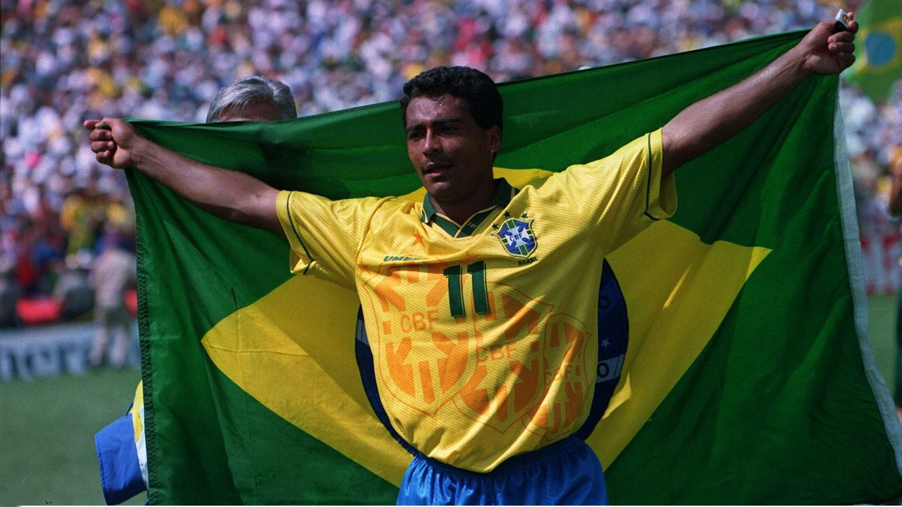
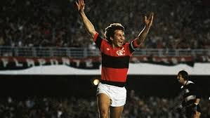
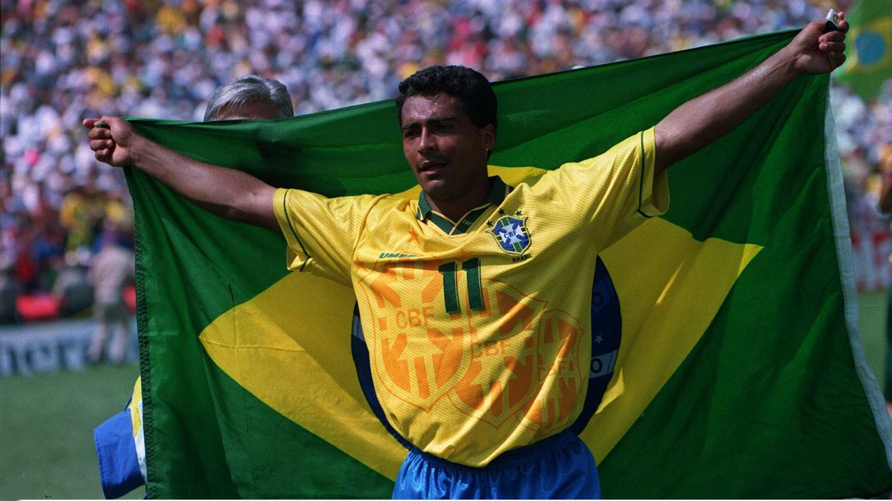
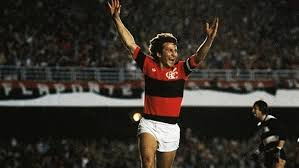

Vinicius Junior foi vendido pelo Flamengo ao Real Madrid em 2017, quando tinha apenas 16 anos, e confirmou o alto investimento dos espanhóis ao se firmar como titular absoluto e referência da equipe. Autor de gol do título em final de Champions, o camisa 7 merengue já defendeu o clube em 264 jogos, balançando as redes 84 vezes e dando 54 assistências.
Romário foi protagonista na Seleção
Brasileira em 1993 e 1994. Em 1993,
fez os dois gols da vitória brasileira
em cima do Uruguai pelas eliminatórias da
Copa de 1994. Contestado por Parreira, Romário
sabia que sua atuação faria diferença e chamou
para si a responsabilidade, levando o Brasil à
Copa de 1994. Em 1994, não foi diferente. Trouxe
o título pelo Brasil e, de quebra, foi o melhor
jogador do mundo eleito pela FIFA e melhor
jogador da Copa de 1994.
Entre 1971 e 1983, disputou 635 partidas e marcou 476 gols. De quebra, liderou o Flamengo nas conquistas da Libertadores e do Mundial, em 1981, além de três Campeonatos Brasileiros (1980, 1982 e 1983) e seis Cariocas. Em 1983, foi vendido à Udinese, da Itália, por 4 milhões de dólares.